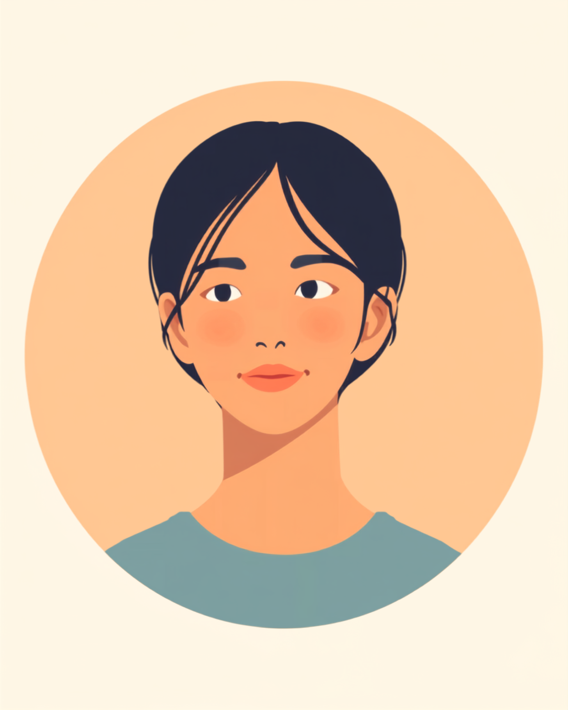

手汗で書類がふやけてしまう、キーボードやマウスがすぐにべたつく、握手のたびに手のひらを気にしてしまう。多汗症は生活に大きく関わる症状でありながら、「誰でも汗はかく」「気にしすぎ」と受け取られやすく、本人がどれだけ困っていても、なかなか深刻さが伝わりにくいという難しさがあります。この記事では、多汗症のある方が仕事の中で抱えやすいしんどさと、職場でできる対策、伝え方のヒントを当事者の声をもとに整理しました（2026年8月時点の情報です）。
PR


「気にしすぎ」と言われる、手汗のことを話しにくい理由

多汗症は、体温調節に必要な量をこえて汗が出てしまう状態を指すことがあるとされています。手のひらや足の裏、わきなど、特定の部位に強く出るタイプもあり、原因や程度には個人差があります。まめざる
就労支援の現場で関わってきた中で、多汗症のある方から何度も聞いてきた言葉があります。「汗かきなだけでしょ、って思われてる気がする」というものです。手掌多汗症のように手のひらに集中して汗が出るタイプは、季節や気温にあまり関係なく起こることがあるとされていますが、周囲からは「暑いのかな」程度にしか見えず、本人が感じている困りごとの深刻さまでは伝わりにくいようです。
書類を渡す前にこっそりハンカチで手を拭く、キーボードを打つ手を意識的に浮かせる、握手を求められた瞬間に一瞬迷う。こうした小さな動作を一日に何度も繰り返している人がいる一方で、周りからは「よく手を拭いてる人だな」くらいにしか映らないことも多いようです。
!
多汗症の症状の現れ方や程度、感じ方には個人差があります。この記事で挙げる内容がそのまま当てはまるとは限らないため、気になる症状がある場合は自己判断せず皮膚科など専門の医療機関に相談することをお勧めします。
「正直言うと、新人研修でキーボード実技のテストがあったとき、手汗で何度もタイプミスしてしまって。周りはサラサラ打ってるのに自分だけ何度も打ち直してて、めちゃくちゃ焦りました。終わったあとキーボードがうっすら湿ってて、隣の子に見られたかもと思うと、しばらく研修室に入るのが憂うつでした。半年くらいはずっとハンドタオルを机に置いてやり過ごしてました。」
20代・男性（手掌多汗症・IT企業エンジニア職）
相談の一コマ

相談者
名刺交換のときに手汗が気になって、いつも一瞬ためらってしまうんです。相手にどう思われてるんだろうって考えると、余計に汗が出てくる感じがして。

まめざる
緊張や不安がきっかけで汗の量が増えやすいと言われているので、気にすればするほど出てしまうという悪循環は、多汗症のある方にはよくある感覚のようです。
相談者
悪循環だったんですね…自分の意志が弱いだけかと思っていました。
まめざる
意志の問題ではないとされています。名刺交換の前にさっと手を拭ける準備をしておくなど、場面ごとの小さな工夫を、次の章で一緒に見ていきましょう。
書類・キーボード・握手、場面ごとに変わる緊張と汗の悪循環
多汗症のやっかいなところは、「気にする」という行為そのものが症状を悪化させやすいとされている点です。緊張や不安をきっかけに交感神経が過剰に反応し、汗の量が増えやすくなると言われています。汗が出る、それを見られたくないと思う、余計に緊張する、さらに汗が出る、という流れが一日の中で何度も繰り返されることがあります。
i
汗の量や、どの場面で悪化しやすいかは人によって異なるとされています。同じ「手汗」という言葉でも、実際の困りごとの大きさは一人ひとり違うことがあります。
この「緊張と汗のループ」は本人にとってはリアルな悪循環でも、周囲からは「そんなに気にしなくても」の一言で片づけられてしまいがちです。本人も、毎回説明するのは疲れるので、だんだん人前に出る場面そのものを避けるようになる、という声も聞きます。
「うちは営業なので名刺交換が本当に多くて、正直めちゃくちゃ憂うつでした。渡す直前にこっそりズボンで手を拭くんですけど、それ自体を上司に見られて『そんなに緊張しなくていいから』って笑われたことがあって。緊張っていうか、これもう体質なんですって言えないまま3年くらい経ってます。取引先に会う日は朝からずっと手のことばっかり考えてる自分にちょっと疲れます。」
40代・女性（多汗症・営業職）
職場でできる小さな対策と、伝え方のコツ
多汗症の悩みは目に見えにくいぶん、周囲に理解してもらうには、症状そのものより「具体的にどう困るか」「どうしてもらえると助かるか」を伝えるほうが伝わりやすいとされています。すべてを説明しようとせず、業務に関わる範囲に絞るのがポイントです。
場面別に試してみたい工夫の例
- 制汗剤や汗拭きシートをデスクの引き出しに常備しておく
- マウスパッドを吸湿性のあるタイプや防水タイプに変えてみる
- 書類を渡す前に一呼吸おいて手を拭く、自分なりのルーティンを決めておく
- 握手の場面が多い仕事なら、事前に「手汗気味なので」と一言添える練習をしておく
「体質なので、汗拭きシートを近くに置かせてください」くらいの軽い伝え方で十分な場合が多いようです。深刻に説明しようとするより、日常のちょっとした習慣として周りに知ってもらうほうが、お互い気負わずに済むという声をよく聞きます。まめざる
信頼できる上司や同僚にだけ先に伝えておき、必要な範囲でチームに広げてもらう、という進め方をとっている方もいます。「気にしすぎ」と言われることを恐れて黙り続けるより、具体的な一言を先に伝えておくほうが、結果的に気持ちが楽になったという声も少なくありません。
治療の選択肢と、一人で抱えないための相談先
医療機関でできること
多汗症には、制汗剤や外用薬、イオントフォレーシス（微弱な電流を使う方法）、内服薬、注射などいくつかの治療の選択肢があるとされています。どの方法が合うかは症状の程度や部位によって異なるため、皮膚科など専門の医療機関に相談するのが確実です（2026年8月時点の情報です）。手掌多汗症向けの外用薬は保険適用の対象になっている場合もあるとされていますが、詳しい適用条件は医療機関にご確認ください。
相談できる窓口
- 皮膚科（症状の相談、治療方針についての相談）
- 職場に選任されている産業医（50人以上の事業場に選任義務あり）
- 自治体の障害福祉窓口（他の疾患との関連がある場合の制度相談）
- 就労移行支援事業所（職場との調整を含めた働き方の相談）
多汗症の症状の現れ方や、必要な対策の内容には個人差があります。この記事の内容がそのまま当てはまるとは限らないため、実際の判断は医療機関や支援者とよく相談しながら進めることをお勧めします（2026年8月時点の情報です）。
「気にしすぎ」と言われやすいからこそ、自分の中だけで抱え込みがちになります。それでも、具体的な場面と工夫をひとつずつ共有していくことは、決して大げさなことではありません。
よくある質問
Q. 多汗症は治療で改善しますか？
制汗剤や外用薬、イオントフォレーシス、内服薬、注射など複数の選択肢があり、症状の程度や部位によって合う方法は異なるとされています。効果の感じ方には個人差があるため、皮膚科など専門の医療機関に相談することをおすすめします（2026年8月時点の情報です）。
Q. 手汗対策で市販品はありますか？
制汗クリームやシート、吸湿性の高い手袋、防水加工のマウスパッドなど、日常的に取り入れやすいグッズがあるとされています。合う・合わないには個人差があるため、いくつか試しながら自分に合うものを探している方もいます。
Q. 多汗症で障害者手帳は取れますか？
多汗症の症状だけでは身体障害者手帳の対象になりにくいとされていますが、症状の程度や他の疾患との関連によって、指定難病の助成や障害年金の相談対象になるケースがあるとも言われています。個々の状況で判断が異なるため、自治体の障害福祉窓口や年金の専門家に確認することをおすすめします（2026年8月時点の情報です）。
Q. 手汗のことを職場にどう伝えればいいですか？
症状の詳細をすべて説明する必要はないとされています。「書類を扱う作業の前にひと拭きする時間がほしい」「握手の際は一言添えさせてほしい」など、具体的な場面に絞って伝える方法が助けになる場合があります。
Q. 手汗が悪化しやすい場面はありますか？
緊張や不安、暑さなどをきっかけに汗の量が増えやすいと言われています。特に人前で書類を渡す、握手をする、キーボード作業を見られていると感じる場面などで悪化しやすいと感じる方が多いようです。あくまで一般的な傾向であり、感じ方には個人差があります。
すべてを一人で抱えなくても、小さな工夫と一言だけで少し軽くなることがある
PR


一人で抱え込む前に、今の気持ちを話してみませんか
「まだ迷っている」段階でも大丈夫です。mimemimeの無料相談は、今の状況の整理から一緒に始められます。
無料で話してみる
おのざる
mimemime代表。就労支援の現場経験をもとに、障がいのある方の働く不安に寄り添う記事を執筆。